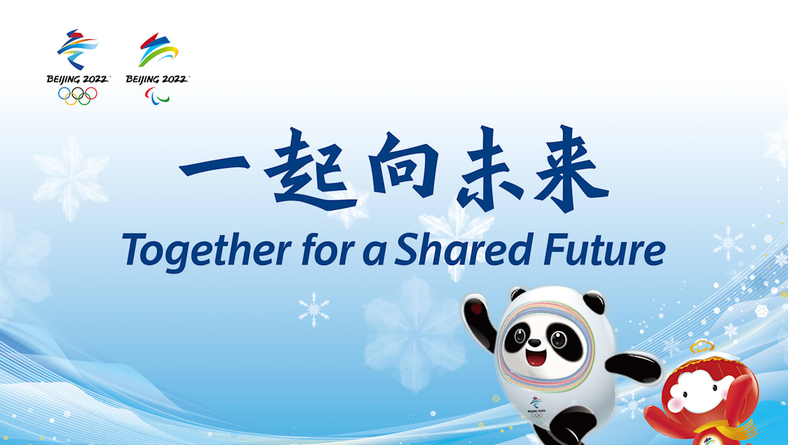
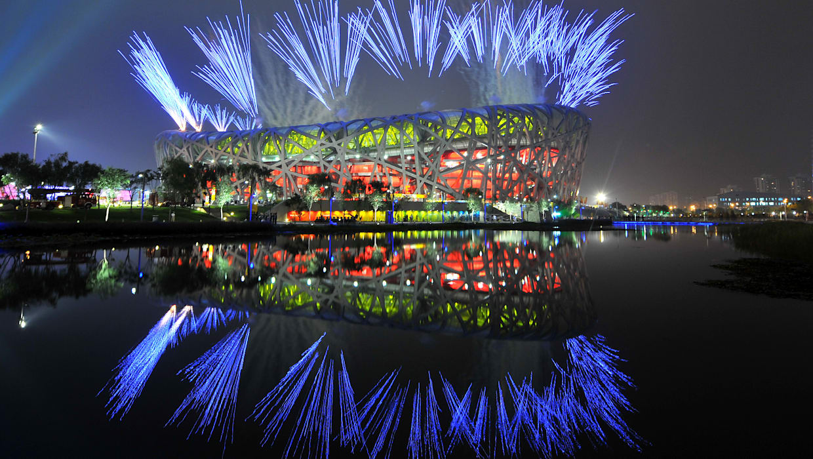
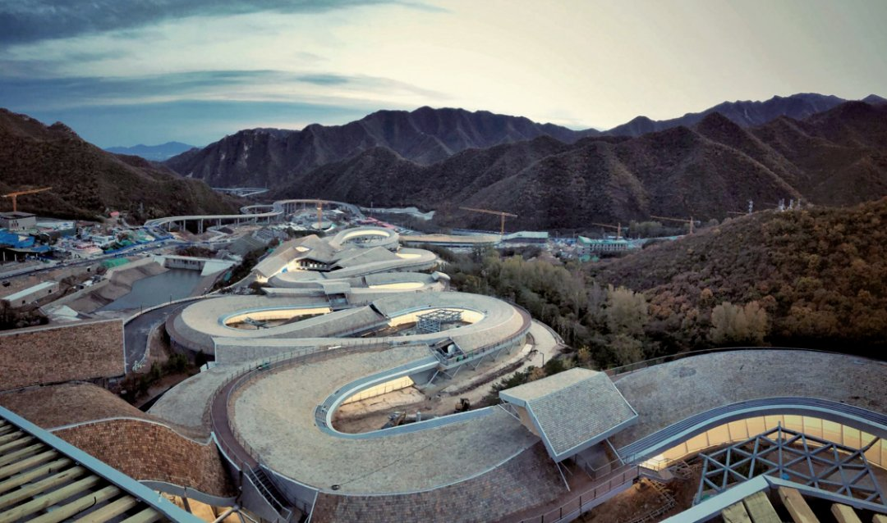
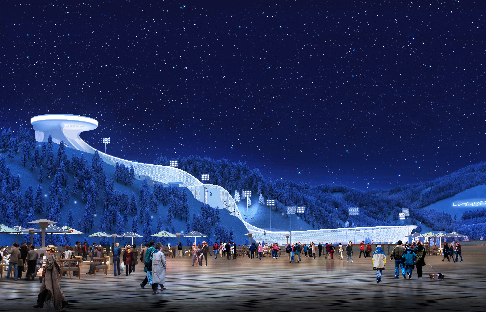
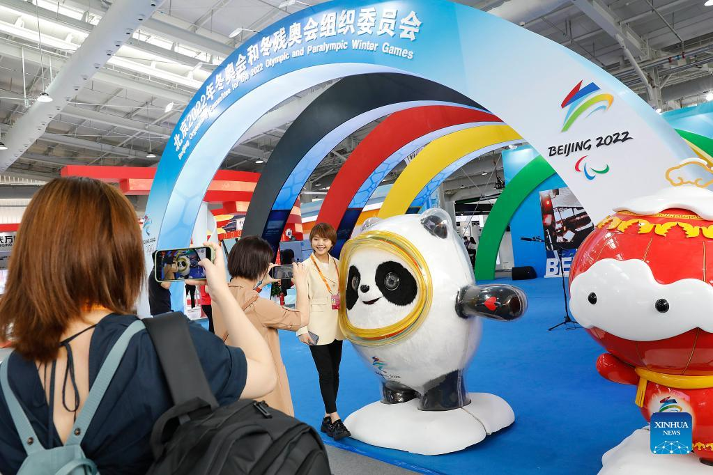
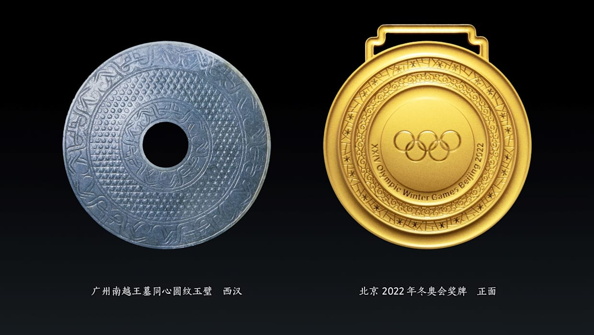

Содержание

- Выборы столицы Игр 2022 года
- Девиз и рекламный ролик
- Стадионы
- Факел
- Талисман
- Медали
Ближайшие Олимпийские игры пройдут уже этой зимой - ими будут 24-е по счёту зимние Олимпийские игры в Китае. 31 июля 2015 года на сессии Международного Олимпийского комитета в Куала-Лумпуре столицей проведения Олимпийских игр был назван Пекин (англ. Beijing), который станет первым городом, принимающим и летние, и зимние Олимпийские игры (предыдущие Игры были в 2008 году). Олимпийские игры пройдут в Пекине с 4 по 20 февраля 2022 года, то есть чуть более чем через 2 месяца на момент написания данной статьи.

4 февраля 2022 года загорится олимпийский огонь зимних Игр в Пекине. Соревнования в китайской столице пройдут как на уже существующих аренах, так и на совершенно новых объектах.
На стадионе «Птичье гнездо» пройдут церемонии открытия и закрытия, плавательный комплекс Водяной куб переоборудовали под зимние виды спорта. К Играм-2008 было построено множество отелей и крупный медиацентр. Из-за нехватки снега в Пекине (Beijing) соревнования будут проводиться также в Яньцине (YANQING) и Чжанцзякоу (ZHANGJIAKOU). Олимпийская деревня будет находиться на расстоянии около 200 километров от некоторых спортивных объектов, поэтому потребуется построить к соревнованиям высокоскоростную железную дорогу.
Эта зона находится в центральной части Пекина. Здесь пройдут соревнования в ледовых видах спорта, а также церемонии открытия и закрытия Игр.
Яньцин – холмистый район в 75 километрах к северо-западу от центра Пекина. Он изобилует термальными источниками, национальными парками и лыжными курортами. Здесь находится Бадалин – самый посещаемый отрезок Великой Китайской стены. Спортивные объекты Яньцина примут соревнования по горнолыжному спорту, бобслею, скелетону и санному спорту.
Чжанцзякоу – популярный лыжный курорт в 180 километрах к северо-западу от Пекина. Благодаря новой железнодорожной ветке, гости Олимпиады смогут за час попасть в любой кластер. В Чжанцзякоу пройдут соревнования по лыжным гонкам, лыжному двоеборью, биатлону, прыжкам с трамплина и фристайлу.
Олимпийский факел является обязательным атрибутом Игр и имеет уникальный дизайн для каждой Олимпиады. Факел зимних Олимпийских игр 2022 года в Пекине представляет собой конструкцию в виде спирали, напоминающей развевающуюся ленту. На передней части нанесена эмблема Олимпиады, а витая красная полоса (для Олимпийских игр, для Паралимпийских - жёлтая) расположенная по всей длине факела символизирует Великую Китайскую стену, олимпийские лыжные трассы и стремление человека к свету, миру и совершенству. Основные цвета факела — красный и серебряный — символизируют огонь и лёд, обозначая, что факел несёт «свет и тепло в мир снега и льда»
В сентябре 2019 года организаторы Олимпиады в Пекине представили официальный талисман соревнований. Им стала панда по имени Бин Дуньдунь, одетая в ледяной костюм, напоминающий космический скафандр. На современном китайском слово "бин" имеет несколько значений, но в первую очередь означает лед, а вместе с ним - чистоту и силу. "Дуньдунь" значит здоровый, крепкий и жизнерадостный. Также это слово часто используют, когда говорят о детях.
Новый олимпийский талисман - это посол зимних видов спорта, который приносит радость участникам и зрителям Олимпиады. Он олицетворяет силу тела и воли спортсменов. Яркие разноцветные кольца, расположенные вокруг мордочки панды, символизируют обустроенные по новейшим технологиям ледовые и снежные арены Пекина, а сердечко на левой лапе — гостеприимность Китая.
Медали Пекина-2022 получили название «Тонг Ксинь», что означает «вместе как единое целое». Дизайн основан на китайских древних нефритовых подвесках с концентрическими кругами. Пять колец символизируют олимпийский дух, объединяющий людей, и великолепие зимних Олимпийских игр, за которыми будут следить по всему миру. Форма золотых, серебряных и бронзовых медалей проста, имеет классический вид и напоминает медали летних Игр 2008 года с нефритовыми вставками. Это подчеркивает тот факт, что Пекин – первый город проведения и летних, и зимних Олимпийских игр. На лицевой стороне медалей в центре выгравированы пять олимпийских колец, а вокруг – надпись XXIV Olympic Winter Games Beijing 2022, окруженная узорами льда, снега и облаков. На оборотной стороне в центре размещена эмблема зимних Олимпийских игр 2022 года в Пекине, а вокруг нее выгравировано полное китайское название зимней Олимпиады: 北京2022年第24届冬季奥林匹克运动会.
Также на обороте, в самом большом кольце, выгравировано название медального соревнования. Вогнутое кольцо повторяет традиционный дизайн нефритового кулона. Неглубокие резные узоры на кольцах основаны на традиционных китайских узорах.